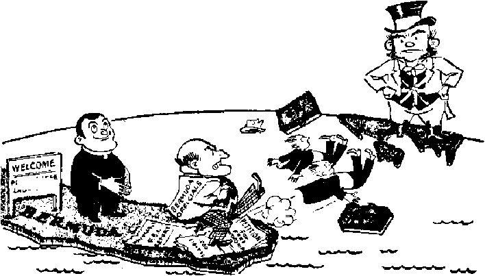

SEX WORSHIP SNARES THIS SMART WORLD
Bermuda Bows to Intolerance
Britain’s New Health Service Works
The “Heir of All Things”
THE MISSION OF THIS JOURNAL
News sources that are able to keep you awake to the vital iflfluca of our times must be unfettered by censorship and selfish Interests, “Awake I*' has no fetters. It recognizes facts, fhees facts, is free to publish facts. It is not bound by political ambitions or obligations; it is unhampered by advertisers wnoss toes must not be trodden on; it is unprejudiced by traditional creeds, This journal kcepu itself free that it may speak freely to you. But it does not abu&e ib fi vcdoiiL It maintains integrity to truth.
* A wake I” uses the regular news channels, but is not dependent on them. Its own correspondents are on all continents, in scores of naUons. From the four corners of th« earth their uncensored, on-the-sveues reports come to you through these columns. This journal's viewpoint is not narrow, but is international. It Is read in many nations, in many language^ by persons of all ages. Through its pages many fields of knowledge pas^ in review—government, commerce, religion, history, geography, erexerice, tfoctaj1 oondCtfons, rra&ra^ wonJers—why, £<te aovvit'* age is as brood as the earth and as high as the ho&vens,
“Awake P’ pledges Itself to righteous principles, to exposing hidden face and subtle dangers, to championing freedom far all, to comforting mourners and strengthening those die heartened by the failures of a delinquent world, reflecting etire hope for the establishment of a righteous New World.
Get acquainted with "AwakeI” Keep awake by reading "Awake!”
PDBUSF[EP gajnjiUHTiTT.T- KT _____
WATCHTOWER BIJKJ/H AND TRACT SOCIETY, INC.
117 Ads,™ Street Brooklyn 1, N. T., IT. fl. A.
K, K KNOBB, Prwi*iea« Gbakt J? CITER, flffCrtffa+T
FJva cents a copy Orw dollar a year
Kvm|tt»n«4 jheolrt lx uttit to Io JOTtr mm-H7 Id ttmplkniw wltD T«UlM!*n3 fcr (uvu iiina Eafd dtjlrrry of ifiuflV. iLctnhLCrirr^f. nrc aixsnjiUd al LroDklrn frwii CuU3trt«I Frt> nfilic Ik lutatoS, 1J InrrmaLliical BWStT Wd9f «ilj- Pumtrillion riV*. 1n iUI 1*1 nut Miurtrlil *Ji nrrs ftalw ill tocU crrimij. .
Sutlia of rep lot IM (Witt Tfl»™ nl.nEt] fa utert 4 Lubt Nd lllUtl More nlnrs^pLluu expku.
ChttH if irtni* abes attrt to w oiflrs rnuj bn efftOlltt wiViln ecnf: mnnrh. Komi your uCJ
M 11 MV sJlIrcso.
Vittore Teirfr $i±wr1nt!mi Rale
Amvtlti. M-, llTAiaBBSt. TtrncMyn !, N.Y. 11 Alrt«li3, 7 Btrrtfcrt nd., Pi/Il11ii1i:1iI, h’.S.W. lit Ciniil, 4 D It’d a Alt, Tnninhi fi, DiifarJu 11 England. 34 Crnr-n Trwucn. T.iimjuti. W, X $Hth Ahls. &2fl Jln*Lna Huma, Up) TflvQ
Em mil hi awond-iJut mrttvr of, Bnni^u, n, T,. let ti March 5, Iffre. Prlubeil lu U. U. A
CONTENTS
Sex Worship Siiiu'uh This Smart World 3
New Converts Through Kinsey Repurt 7
Shonfd Sex Sbuidards IVe Changed? 8 gcx Eduflation Lhe Rumodv?
This World Bankrupt iu iluml Fiber II)
"Wild I .•if*’' in Neiv York City
The Dimond—bpsrttier SuprimiB
netimi ria Bciwr to Intolerance
in Deporting Jehovah’s witnesses
Enemies Uneuvered an ri I'lvpoAed
Spain's Church Ccxiwur Bin's
Britain’!? New Health Sendee Wtu'ka
“Thy Word Is Truth”
®^Now it is high time to awake.'—Romans 13:11
Volume XXIX Brooklyn, N. ¥,, December 8, 1848 Number 23
Sex-Worship Snares This Smart World
Centuries ag*o sex-worship knocked Israel for a loop. Today It knocks sophisticated Christendom for two. Decent natures will shudder at the raw facts that follow. But resolute withdrawal of the curtain of ignorance that blinds us to the past will be an eye-opener to the parallel of the present. So brace the mind for the shocking impact of some sordid truth.
NEITHER shaft thou serve their gods; for that will be a snare unto thee.” Thus spake Jehovah God in warning to His covenant nation Israel just prior to their entering the Promised Land. Bible readers know that thereafter wayward Israel did serve the heathen gods in “groves” and “high places”, but few are aware that the snare was the most sordid sexual depravity.
The religion of the Baals, the Asherah and Ashtoreth of Canaan was a lewd, repulsive sex-worship. Concerning it Rotherham, on page 259 of his Emphasised Bible translation, says: “Their very worship was grossly sensual and revoltingly cruel. In honour of their deities women surrendered their virtue. Their sacred places were brothels. The generative or^ gans were openly represented by disgusting symbols. The peoples had holy (!) prostitutes, male and female. Lustful gods are cruel, and demand to be worshipped with human blood,” Who will say that the Most High was not right to destroy such polluters of the earth and contaminators of mankind as these Canaanite sex-worshipers? Understandably, He forbade the Israelites to intermarry with the brutish inhabitants, lest in a very literal way they “go a whoring after their gods”.—Exodus 34:11-16.
But Israel strayed and stumbled and fell, and was snared by the sex-worship. (Judges 2:17) The King James Version Bible vaguely speaks of stocks and stones and groves, whereas modern translations use plainer words to bring to open shame the ugly facts of Israel’s fall. Note the following Scripture quotations that shed light on the enormity of Israel’s sins in sex-worship:
On a high and lofty mountain you have set up your bed; and thither have you climbed to offer sacrifice. Behind the door and the side posts you have set up your phallic symbol [sex-organ image] ; and apart from me have you stripped and gone up, you have distended your parts; you have bargained for those whose embraces you love; and with them have you multiplied your harlotries, while gazing on the phallus.—Isaiah 57:7,8, An American Translation.
My people ask a piece of wood to guide them, a pole, gives them their oraeles! For a harlot-spirit has led them astray, they have left their God for a faithless way; they sacrifice on mountain heights, and offer incense on the hills, below the oak, the terebinth, the poplar—so pleasant is their shade. Thus your daughters play the harlot, matrohs commit adultery. But I 'will not punish your daughters for harlotry, nor your matrons for adultery, when the men themselves go off with harlots, and sacrifice with temple-prostitutes. —Hosea 4:12-14, Moffatt.
And even then the Eternal will strike Israel till it sways like a reed in water; he will root Israel out of this fine country which he gave to their fathers and scatter them east of the Euphrates, because they have vexed the Eternal by making saered poles for themselves. For they erected shrines, obelisks, and sacred poles, on every height and under every spreading tree; also there were temple-prostitutes in the land [male devotees of the fertility cult in the land].”—1 Kings 14:15, 23,24, Moffatt; An Amer. Trans.
Israel flirted with sex-worship even before entering the Promised Land, when at Mount Sinai the golden calf was set up, Rotherham, on page 260 of his Emphasised Bible, connects the golden calf with the Egyptian worship of Apis the bull, during which religious orgies nude women served a living bull, a bestial defilement forbidden by God’s law. (Exodus 22:19; Leviticus 18:23-25; see also Numbers 25:3-8, Rotherham, and footnote on Baal-peor.)/But in Canaanland the Israelites’ flirtation was consummated as they plunged to the very depths of sexual degradation, men and women becoming temple-prostitutes as a part of the sex-worship, and women even abusing themselves with the images, as we read: “Didst make thee images of the male, and didst act unchastely with them [with which you played the harlot].” —Ezekiel 16:17, Rotherham; An Amer, Trans.
Because of filthy sex-worship God had decreed that the Canaanites would be vomited out of the land. Could He consistently do less with Israel when she did the same deeds? “I will expose your doings, this "religion’ of yours! Your loathsome idols, when you cry, will bring you neither help nor gain; the wind shall whirl them all away, a breath shall blow them off.” (Isaiah 57:12,13, Moffatt) Jehovah did expose the sexy religion through His prophets; faithful judges uprooted the images; Elijah branded Ahab as the troubler of Israel because of Baal-worship, and slaughtered the hierarchy of the sex-cult; Jehu beat it into the ground; Hezekiah purged it from the land; and Josiah smashed it. (2 Kings 23:1-20; 2 Chronicles 34:1-7, An Amer, Trans.) But always like a malignant cancerous growth sex-worship sprouted again, and Israel as a nation rushed into the snare. The sad sequel was Jehovah’s rejection of her as His chosen nation. He spued the Israelites from the land and allowed them to be taken captive into Assyria and Babylon.
Like a monstrous python; sex-worship has sinuously slid its way down through the centuries, till today its powerful coils tighten around Christendom's throat. But oh sp subtly and silently! No warnings rattled out, no hissing to put the victim on guard. And even as strangulation draws closer to the kill, the killer remains unseen or unrecognized, so well is it camouflaged in hoary religious tradition. Still it has left its winding trail in the dust and dirt and mire of the past.
McClintock and Strong’s Cyclopaedia, under the heading “Phallus”, informs us that “the male generative organ, as the symbol of the fertility of nature, was carried among the ancient Greeks in the processions of the Dionysia”. Thence Phallic worship infested Rome, where women and children wore the phallic image around their necks as a charm, and finally the Senate suppressed ft “on account of the more than usual immorality to which it gave rise”. In relating how certain authorities explain the origin and progress of phallic worship, the Cyclopedia states:
They teach that it is the most ancient and universal of the beliefs of the human race, and that it has prevailed among all known nations of antiquity, and has been handed down in both dead and living forms to the present day. They claim to see evidences of its existence not only in Egypt, Greece, and Rome, but also in Syria, Persia, Asia Minor, Italy, Spain, Germany, Prance, Ireland, and Scandinavia, among the mound-builders of North America, in Mexico, Central America, Peru, and Hayti, and in the islands of the Pacific Ocean, and in Africa* They even see its traces among the Jews, and in the use of certain symbols in Christianity. . . . There is not a fast or festival, procession or sacrament, social custom or religious symbol, existing at the present day which has not been taken bodily from ph all ism, or from some successive system of paganism. * * * The nimbus, the aureole, the cross, the fish, and even the spires of churches, are symbols retained from the old phallic worship,—Volume VIII, page 55,
Though these claims are so sweeping that they may be suspect to a degree, in the main they stand the test of critical investigation. To conserve space we choose only one of Christendom’s religious symbols to connect with sex-worship; but to strike a telling blow we choose her most revered one—the cross.
The Masculine Cross and Ancient Sex Worship, by Sha Rocco, published in New York in 1874 by Asa K, Butts & Co., reveals that the cross has a sexual origin, that in both Egypt and India it was worshiped as the symbol of life and regeneration, that in n^any Eastern countries it was the emblem of the male organ and was called the “triad” or “three in one” or “trinity”. The phallic “T” or cross is parent to the idea of “trinity”, and in sex-worship the prominent part of this “trinity” was represented by tree stumps, blocks, towers, spires, steeples, etc. The natural counterpart to the male organ is the female organ, represented by a type of shell, also horseshoe, chasm or cleft, oval or ring. The “trinity” plus the “oval” became a sacred four, and in this combined form of cross and ova! is known as “crux ansata”. Today it is worn as a part'of dress of pope, archbishop and sometimes bishop, in the pallium. On pages 53 and 54 of his interesting book Sha Rocco says:
In view of the prevalent ideas in relation to the cross it is singular and more than strange that the cross is not to be seen on any ancient sculpture as an instrument of punishment. In none of the ancient gems pictured by Layard is any form tof the cross except the Crux Ansata to be found. . . * It is* pertinent to our subject to speak of the idea which possessed the minds of Christian bishops that met in the third century at Nicea and determined that the cross should be the characteristic emblem of the Catholic faith. We may admit that they regarded the emblem as the sign of the death of the Redeemer by a painful method, but we must believe that the astute bishops of Africa and the East recognized in it the emblem of fertility, . . . Every modern addition, namely the addition of the circle and the triple ornament, is a return to ancient heathenism, a commingling of ancient tenets with modern dogmas.
At this point it is essential to state that Christ Jesus was not impaled on a cross, but, in accord with Deuteronomy 21:22, 23 and the Greek word stauros from which “cross” is erroneously translated, was hanged from an upright tree or stake, with no crossbar. Though what generally passes as Christianity is saturated with sex-worship symbols, true Christianity is free of such filth.
The apostle PauP speaks1 of those “whose god is their belly”. They did not make images of the belly and bow and worship in a religious ritual before them; but nonetheless, by their course of conduct they devotedly worshiped their belly and made it their god. The same today relative to sex. This smart world may shun the superstitious beliefs and phallic images of ancient sex-worship, but its inward thought and outward action herd it inescapably into the class 'whose god is sex’. Recognizing this, an article in the August, 1947, Coronet opined: “We live in a pagan paradise of sexual fetishes and sexual worship.”
Sexual lust is toasted, wined and dined. Advertisers find curvaceous cuties essential for publicizing hundreds of unrelated products, models swooning in the moonlight, voluptuous pin-ups bedecking calendars, lipstick that “gives that sexy look”, “Leap year lingerie” decorated with personal telephone numbers and embroidered “bear traps” and “Cherchez L’Homme”, and abbreviated bridal gowns called “Mission accomplished”. The comics super-curve their heroines, the newspapers play up sex and sex crimes, the radio that chatters during the day and the cinema that moves gaudily in the dark sell sex, and heightening the heat of passion come the stage play, night clubs and burlesque.
And what a staggering impact bowls over the decent mind when it is exposed to ultra-modern novels! The one topping the list of best-sellers during the entire month of October is unbelievable, appalling in its obscenity, reeking with language as filthily vile as anything scrawled on the dirtiest latrine wall. Yet a sex-perverted world makes it a best-seller. Also, supposedly'instructive books on sex and married love flood the market, and their very subject assures them a ready market, though they play on morbid curiosity. Perverts, sex maniacs and some teen-agers find in them an incitement to passion. Though they are largely lost in the flood, there are some books that endeavor to inform in a clean way physiological facts or take a stand to stem the rising tide of immorality. One such, Letters to Jane, by Gladys Denny Shultz (J. B. Lippincott Co., Philadelphia, Pa.), observed: “Small wonder if some young fellows get the idea that sex exploits are commendable—the modern world seems to think of little else.”
All channels of propaganda controlled by this smart old world whet sex appetites to the point of sexual gluttony. This world is glutted on sex, drunk on sex, and. there are pitfalls aplenty for the reeling worshipers. This modern binge has rocketed the divorce rate till one out of every three marriages is shattered in divorce courts. This old world thinks sex, sees sex, hears sex, eats sex, drinks sex, dreams sex, lives sex and wil] die in sex. It was long ago foretold as a sign of these “last days” that this world would succumb to the snare of sex and have its life choked from its corpse at Armageddon.—2 Timothy 3:1-5,13.
Contributing to the fall is another sexy best-seller, Sexual Behavior in the Human Male, by Alfred C. Kinsey and associates. It reports a survey on male sexual behavior. Some 12,000 men were interviewed personally, each asked over 300 questions, over a period of 8 years, at an expense of $200,000. The final published report took 5,300 of the cases as the basis of its results. The gist of Kinsey’s findings, though it takes him 804 pages to tell it, is nutshelled for us by the Christian Century, September 15;
Five percent of all 12-y ear-old American boys have already had sexual intercourse; at 13, one out of every 7 has had such an experience ; over 73 percent of American males have pre-marital intercourse by the time they are 20; pre-adoleseents have capacity for frequency of sexual orgasm far greater than most adults; nearly 70 'percent above 35 years of age have had experience with prostitutes ; 86 percent engage in pre-marital intercourse ; between 30 percent and 45 percent engage in extra-marital intercourse; 1 out of every 6 American farm boys has had intercourse with farm animals. [Other reviewers add the finding that 37 percent have had some homosexual experience.]
The accuracy of this report has been a center of controversy. The Christian Century article observed that “in the Kinsey investigation the questions themselves suggested the answers the interviewers were after”. This matches the report of a woman interviewed, who, in explaining how Kinsey put one at ease, said he did not ask her whether she had ever engaged in a certain improper practice but casually asked how many times she had done so. The question presumed guilt. Fine tactics for the sexually promiscuous, but insulting to the decent, and suggests that a denial would be met with skepticism.
Reflecting the opinion of many social workers and educators and psychologists, Dr. Richard H. Hoffmann, New York psychiatrist and expert witness in many criminal trials, said: “I have been trying to get the truth out of patients for 25 years and I can tell you that generally the kind of people we like for friends never blab their sex history to anybody. Only exhibitionists do that— and I must mistrust anything a sick mind tells me.” Confirming the foregoing, Jean L. Autrey, Menasha, Wis., stated in the September Reader’s Digest:
I was in school at the time the senior author of one of these sex surveys was accumulating his data on sex. Any girl was invited to contribute, but only one in our rooming house of ten girls announced she had responded: the only girl of us whose history in pre-marital sex was blemished. To balance her .record I decided to go too. I answered the professor’s questions honestly, but he persisted in accusing me of hiding something. He seemed so sure I was not telling the truth! As a result of ray experience I tend to believe the facts as reported are not a true picture of the normal human. Such books, scientifically labeled but indiscriminately sold, are to young people I know who buy them no more than a licensed peep-show.
Decent and modest persons do not open their private lives to nosy intrusion, even in the name of “science”. Morbid sexual perverts would respond. Exhibitionists would go and boast. The calloused sinner would parade his conquests. The ultra-moderns, the up-to-dat-ers, the “scientifically minded”, the broad-
■minded, the intellectuals, they would flock forward in response to this grand scientific undertaking. But they are the progressives that shun stuffy, old-fashioned morals and shelve Biblical standards ; they are the promiscuous ones whose brains have been saturated with the sexiest plays and revues, whose eyes speed over the pages of the raciest bestsellers, whose lives unfold in the breezy circles where sex is taken in stride as an appetite to be satisfied in much the same offhand manner as eating and drinking.
But whether accurate in its figures, the report does show how steeped this world is in sexolatry. Moreover, the Kinsey report has boomed into the front ranks of the proselyters for sex-worship. However questionable its accuracy or scientific value, no doubt can exist as to its impact on society. Either the Kinsey report or reviews and commentaries concerning it clamor for “closer correlation between biology and the social code”; smear the Bible by deriding “blind acceptance of standards fitted to another age”; claim that sex standards should be set by the people on the basis of what is general practice; belittle adultery as a just cause for divorce; exalt the rule of doing what comes naturally rather than what is right or wrong; sneer at “laws which are much more widely honored in the breach than in observance”; laud Kinsey and his colleagues for “showing how unrealistic and even barbarous is the legalistic conception of sex relations which has prevailed for centuries”. From time to time a stingy handout of lip-service is dished up for ideals, but all the while the impact of fact and argument is to pound them into the grave.
One favorable reviewer admitted: “A few will interpret the general findings as grounds for personal license.” More than a few. And this brings us to the crux of matters. Whether Kinsey is accurate, sincere or scientific is immaterial. The practical, realistic view is, What will be the effects of the report? Will it stem the rising tide of delinquency? Or will it blast away the remaining fragments of the crumbling moral dam? clear the way for unhindered onrush of the imm’orality flood? It gives delinquency advertisement, a send-off, a mighty push. It skyrockets it, equips it with jet-propulsion, genders scorn for the moral code, and leans toward tolerance for delinquency that guilt complexes may lessen.
It devaluates chastity. Usually when a commodity becomes scarce its value is enhanced. Not so here. The picture painted is that few value virginity, many ignore the marriage ties. Young women doubt the need of retaining virginity till marriage when they are led to believe their husband will be a fornicator anyway. Young men debate the value of continence when the majority carouses. It spawns suspicion of the marriage partner. Surely the report is a demoralizer, painting the chaste as isolationists in an immoral world. It whips up the froth that everyone is doing it, the sexual bandwagon is rolling, get with the gang, join the crowd. In the name of science the unwary arc bowled over with columns of figures, with imposing statistics that charm many, and that are swallowed without mental chewing or -critical tasting. And since scientists dote on concrete fact, let them crunch on the following:
I dare not allow my name to be published, for reasons that are clear enough, hut I could testify under oath that since the publication of one recent survey on,sex, the number of illegitimate pregnancies among our girl students has been multiplied four times over. —Professor at one of America's best-known scientific institutions, published in the September Reader's Digest.
Sex surveyors, take your bows. You win many converts to the sex cult.
And take more bows, as we’read other opinions of prominent men, to the effect that your sex surveys “may also plant in the public mind the seeds of a movement which will destroy all of our concepts of moral conduct5’. Already the clamor rises for a change in sex standards*
Modern trends gnaw away the moral foundations that are already rotting from under this evil world. The reasoning is to face the facts of imperfect hu-
BAND WAGON
man conduct, do not try to correct adultery and sex excesses, but adjust society to them. The subtle pressure is to accejit the conditions as normal, natural. Moderns frown on censure as prudish moralizing. They would make promiscuity the
accepted standard and brush aside all restraints, change the long-accepted standards of what is right and wrong, revise outdated moral standards to meet modern conduct. The standards the moderns would set could hardly see over the gutter’s .curb* But the reasoning is that we would no longer have to face the scourge of immorality or guilty consciences; even delinquency under such rules would be difficult Sex would reign supreme* The Bible would be tossed into the ash can. The family circle would be broken. Why, this latter was even advised by some of the modern brains, as reported in the New York Star, August 19, in a dispatch from London:
Abolition of the family as an outworn social unit was seriously recommended by some social scientists at the International Congress on Mental Health here yesterday, while several others weighed the possibility that the family would inevitably dissolve under the pressure of the industrial society* It is surprising how many European sociologists are convinced*that the family no longer serves a useful function in modern life. They urge getting rid of the family and turning the children over to the state for bringing up. Surprising, too, is that this proposal, first advanced by ancient Greeks and by Rousseau in the eighteenth century, is supported by experts in established Western countries.
A striking fulfillment of the Bible prediction that in the 'Hast days” persons would be “without natural affection”! (2 Timothy 3: 3) In Letters to Jane the author optimistically expects science to ultimately stumble into the “brilliant discovery” that millions have known for ages, namely:
Some day science will make the brilliant discovery that sex is beneficial and wonderful under conditions that make for emotional and spiritual as well as physical satisfaction; for permanent relationships, the establishment of homes, and bringing into the world children who are legitimate and loved. But—that under other circumstances, continence is the better and more wholesome rule, [p, 150J
Sex standards should not be changed. Doubtless they will not be changed. The Bible codes of conduct will stand, just as God’s Word will endure forever. Though flouted by many, though trespassed by others in moments of weakness, they are too deeply embedded in the minds and hearts of millions to be routed by the modern clamor of a few sexy, smutty best-sellers. The Bible still soars to circulation heights that dwarf the combined spread of the false wisdom of modern babblers.
If so many persons were not hypnotized by the glitter and glamor of modern science, it would not even be necessary to point out the obvious absurdity of their argument for changing sex standards to fit reality: Adultery is general! Make it acceptable. Cursing is widespread! Embrace it as good usage. Murders are frequent! Okay them. Stealing rampant! Make it legal. Lying universal! Hail it. Open arms to sex crimes, kidnapings, assaults, grafts, briberies, felonies and all sin just because it is practiced. Proclaim open house for evils driven underground by moral codes.
Deliver us from such foolish reasoning by false scientific “saviors”! One educator, after noting how sick the world was from sexual gluttony, sensibly said: “Let us not confuse the ailment with the desired state of health, or change the temperature scales on the thermometer to make the fever normal.”
The ultra-moderns, the intellectuals, the progressives and the up-to-daters have lungs that are as lusty as their easy principles, and their voices bray out day and night in noisy attempt to rout the Bible moral code. But even many who crave morality are sidetracked before reaching the remedy. For example, in a constructively written article Cosmopolitan magazine, February, 1948, said: “We cannot go on paying the toll of ignorance; a wretched toll summed up in divorce, promiscuity, venereal disease, homosexuality and sex crime.” The article claimed payment of this toll could be halted by sex education.
Plain, simple, clear sex education is good for children, and it should be given them by their parents. Parents should not dodge their duties and hide behind the stork, for ultimately wised-up offspring will give them back the bird, and not bring in future problems for parental guidance. Along with the few essential physiological facts can be given reasons for chastity till marriage. Stress the mental and emotional aspects, the moral issue, the godly side, that ideals may be instilled that will pay off heavily in long-term dividends of happiness and inward joy. But the modern trend in sex education skirts around those aspects. Those things are too intangible for modern materialists. They harp on the natural, the physical, the biological, and how to outwit and frustrate the reproductive processes, to lift the penalty of disease or consequences of pregnancies and illegitimacies. The motives for getting such education are base, and use of the knowledge has likewise been base. Such sex education is no remedy. It is generally 'conceded that people know much more about sex now than in past generations, yet the toll in delinquency rockets ever higher in these days of inflation. Henry C. Link, of the Psychological Corporation of New York, said, in the September Reader's Digest:
The following excerpt from my book The Rediscovery of Morals is pertinent to your discussion : Jlecentiy a high school teacher asked her class in hygiene to vote on the subject they wished to discuss. The majority voted for a discussion on how to have intercourse without the risk of pregnancy. This incident stems from a fallacy which underlies all education; namely, that if people are taught the .facts their conduct will be more intelligent.
The campaign in behalf of sex education in the schools is an excellent illustration. Its entire emphasis has been on the physiological facts of sex almost to the complete neglect of its spiritual and moral values. The more people are taught about the physiology of sex, the more likely they are to exploit sex for piu-ely selfish ends. This is not an argument for fewer facts, but for a greater emphasis on the ethics of sex: for example, the codes of chastity, of marriage, of having children.
More and more colleges are giving courses in marriage. These are adding still more facts to the top-heavy load on a foundation in which the moral cement is crumbling. The American people are already better educated in the scientific facts of life than any nation in history, and yet divorce rates and juvenile sex delinquency have reached a new high.
This smart world has outsmarted itself. On the altar of science it has sacrificed. th$ Bible. On the altar of sexual lust it has offered, up morality. Having made sex its god, moralizing smacks of heresy. So the moderns slam the door in its face, shut out any reform. Why? Maybe they too keenly feel their guilt and wish to protect their egos. Maybe they have soured on moralizing because of hearing it from too many pious religious hypocrites, who talk one way and walk another.
It might even be that their aversion springs from the Bible itself. They may cite Bible characters who slipped into delinquencies. They forget that the failing ones paid for their sins, reaped as they sowed. Moreover, the Bible realistically recognized the imperfections in fallen flesh and made provisions for forgiveness. Still, it set up the code, the standard, the signpost leading to better living, happiness, the “peace of God that passeth the understanding of men\ Because imperfect man could not always measure up to the code was no cause for ousting the standard; on the contrary, it only emphasized the need for guidance.
Moralizing. It is called impractical. What is impractical about chastity, about virtue, about purity and continence? If some worldlings today rant against the Bible standards as impractical, do they call their soaring divorce rate more practical? Are the abortions and illegitimate births practical? And homosexuality, abuse with animals, venereal disease, sex crimes by perverts and maniacs, broken homes, parentless children, wrecked lives—how practical are these things ? The adulterer, running from romance to romance, thrill to thrill, & tragic and frustrated figure; the adulteress, soon jaded and abandoned, lonely and unhappy—is their way of living practical? A life wasted in an ultramodern intellectual course, void of true emotional joys and any innerglow of clean delight. Could anything be more impractical than stubbornly harvesting year after year the above crops of fanatical sex-worship ?
It used, to be the sinner that was frowned upon. Now it is the one championing morality that is thrown on the defensive by the name-calling cry of ‘Moralizer’. Doubtless Israel’s devotees of the “fertility cult” sneered out similar names at Isaiah, Ezekiel, Hezekiah, Josiah, and others that exposed the snare of sex-worship. But Israel’s sex-worshipers, like a bunch of babbling fools, blurting out blasphemies against God, struck blind by their egotism and self-esteem, groped stupidly on to stumble into woe after woe till they finally reached the bitter dregs of captivity and death that waited in the bottom of the cup they had poured for themselves. They could have profited by listening to a little moralizing.
So could this world, if it were not so smart in its own conceit. But they shun moral reasoning to imbibe the demoralizer’s brew, and intoxicate themselves with the sex potions poured through most of the world’s propaganda agencies. The hangover they seek to counter by scuttling the moral code and setting up in its stead science and medicine, social workers and sex education, psychologists and psychiatrists that vaguely prattle about loosing inhibitions.
Actually, the remedy is so simple. And in their hearts all peoples know it. Obey God’s counsel. Close the mind to demoralizing thoughts; fill it with clean thoughts. (Galatians 5:19-25; Philip-pians 4:8) The body directed by a clean mind will not stray far. It will not need the futile hangover remedied of this smart world. What if medical science can erase venereal disease from1 the body, can it cleanse the mind and heart? And what satisfactiofi is a clean body if it houses a dirty mind, wherein we live, and from which we cannot escape ?
Love is the best in life. Why settle for lust? Why open the door to pa'ssion and let its upswelling flood sweep you into folly and wash away your chances for the best? Why listen to the sex chants of Satanic sex-worshipers who seek to rouse passions till they drown love, virtue, morality, godliness, in a tidal wave of sex-supreme doctrines and delinquencies that will leave in its wake the dirty, littered debris of black reproach ?
Do not sell love short to indulge sex. It is not the biological urge of sex that is love. Love involves the heart, mind, soul and strength, as the Bible says. Unselfish devotion, not self-gratification, not animalism. Lt has heart and. respect and preciousness. With it youth builds air castles clean and lofty, dazzling white in their precious purity, and in time a couple can move in if they have both kept themselves clean. If not, the air castle tumbles. Or, worse yet, it may not topple but stand to mock you with what might have been. Uncleanness will bar you from it, lock you out of it. It is only for clean people.
All this may sound highly idealistic. But youth is idealistic. Nor do adults grow out of this state—it merely rubs off from contact with a sordid world. But there is a new world soon to be established that will be filled with1 air castles beyond human dreams, and supported on the mightiest of rock foundations, It is Jehovah’s new world, founded on Christ Jesus, inhabited by persons cleansed with the water of truth and blood of Jesus, and entirely free of the snare of sex-worship from whose hip dangles two scalps. The old and shriveled scalp of Israel. And. the fresh and bloody scalp of this smart world.
TJain Star<ja^er
Five ferocious new faces have made their appearance at the Bronx Zoo’s reptile house. One untidy chap does not enhance his questionable beauty by failing to shave, though in his native Australia his bristles may be the rage among lady lizards. Some sages have observed that a mustache is a mark of male vanity, and the way this bearded lizard “mugged” the camera when brought out to pose for photographers went far to prove the theory. However, after a hasty glance at his portrait and a snap judgment, his beard has too much of the shagginess of a forty-niner and too little of the waxed sleekness of a city slicker to justify1' any vain pride. When frightened the specimen puffs out his beard till it appears like a ruff around his Head. He also has the trait of sitting on fence posts or other handy perches and gazing haughtily upward. In his native Australia his prone-ness to stare skyward has earned him the descriptive name of “stargazer”.
“Tai {bearer**
Standing by rather quietly to oblige the photographer with “just one more shot” was an oddity that arrived at the Bronx Zoo as a gift from the
London Zoo. He answers to the name of Greater Africa plated lizard, and when feeling well and “all in one piece” measures a respectable length. But he has a tendency to “go to pieces” at times of stress and crisis. When hotly pursued by predatory enemies the plated lizard has the remarkable ability to snap off its long tail, which unhitched tail carries on bravely in the face of danger, writhing and squirming on the ground to distract the pursuer while the “better half” slinks away unnoticed. But the lizard has made no supreme sacrifice. He can bear tails as a fruit tree bears fruit. The two-foot-long specimen at the Bronx Zoo has lost his tail by snapping it off in the face of danger, and is now engaged in the slow process of growing or bearing a new one.
^he Lounge Lizard and Popeye
Reluctant to pose was the double-crested basilisk hailing from Central Am eric; a. Bright green and eighteen inches long, it scratches and bites on any pretext, or no pretext. When frightened it rises up and runs od its hind legs to increase speed, and can “pick ’em up and lay ’em down” with such blurring speed that it can race along upright on water for as much as ten feet! But, then, on the other hand, he likes to lounge around, and astounds spectators by choosing as his favorite divan cactus upholstered by prickly spines. A fellow inhabitant of this amazing lizard is Muller’s chameleon, or the unicorn chameleon, also green, but with the ability to change shades of color. It can wag its tongue with an adroit^ ness that would be the envy of the sewingcircle ladies, darting it out for at least a foot to nab careless insects. And if it doesn’t tell all, it sees everything. It has revolving eyeballs that pop out and see in all directions.
* Most “ornery” of the “five ferocious faces” is the young three-foot-long Nile monitor. He may feel extra tough because of his “big brothers” of
millenniums ago, for he is the most primitive of lizards and most closely related to the monstrous dinosaurs of the dim past. This pugnacious creature could not be called shy, not even of the staring camera, though when it was held for a pose it thrashed out with its punishing tail, slashed with its claws, attempted to bite, and zigzagged its forked tongue like a lightning bolt. When full-grown the Nile monitor is eight feet long, and is said to be capable of downing a man with the blows of its whiplike tail. This dapple green and blue reptile would be quite a contender for the decathlon crown in the lizard Olympic games. It can race along the ground at the amazing speed of twenty miles per hour, but is just as much at home climbing in trees or swimming in streams. Quite the athletic type.
Qloomj Aphids Feed Laughing Gulls
Up in Central Park swarms of flying aphids had hatched to make their amn autumnal bow to New Yorkers. During the summer they had to content themselves wj lowly, earthbound crawling over grass and shrubs. They had survived the unladyli gluttony of lady beetles that had thinned their ranks. They had experienced the e thralling ecstasy of the mating call—for it is in autumn that a young aphid’s fan lightly turns to thoughts of love. Now’, on newly sprouted wings that carried t pinhead-size bodies of the aphid lovers high above the hungry jaws of lady beetl they embark on the sea of matrimony. But, alas, that blissful sea becomes stormy September 28. Unwelcome wedding guests flew in from the ocean. Sea birds, 5,0 in number, wheeled and turned in huge circling clouds, striking through the co centrations of winged aphids, picking them off on the fly. The air rang with t familiar। raucous cries of avian delight as terns and laughing gulls feasted, but . answering laughter f^om the gloomy aphids. To them the laughing gulls were no jol
£Bird Migrators Crash into Empire State Building
*8? The Empire State building has snatched planes from the air. Now it batters migrating 4rirds to earth. And to that villain Fog must the accidents be charged. Birds, principally warblers, migrating south, hit heavy mist over the Hudson river, lost their course, became confused, and early on the morning of September 11 crashed into the towering bulk of Empire State. For more than two hours, beginning about 1 a.m., the tiny feathered bodies plummeted to the sidewalk or street, or the setbacks of the skyscraper. Many that survived the fall were finished by vehicles. Not only was the intermittent plop-plop of the rain of falling birds disturbing, but particularly touching was the shrill chirping of the many injured victims. Pedestrians in the area, moved by the plight of the birds, tried to revive some on the spot, while others headed for restaurants of homes with them to try to feed them. The Department of Sanitation removed the tiny bodies that littered Fifth avenue. They were part of a large migration that each fall heads for Central and South America.
Getting His Rent for "Peanuts”?
*?? A new tenant moved into one of the swanky apartment buildings on Central Pai South last October, though doubtless in need not only of a bath but a disinfectin and a bum that will not even pay his bill in “peanuts”. It is a common, Centr Park variety of gray squirrel. He w’andered over from his park home and into tl lobby at 6 p.m., to see how the other half lives. He nonchalantly browsed amor the potted plants, climbed the tree-bark (interspersing the greenery, then scurrit back to the park. But high-living had got in his blood. Though the management me class him a deadbeat, he considers himself no bum to be sleeping in the park. £ thereafter every night at 6 in he scampers, jerks his fluffy tail in greeting to tl doorman, takes his constitutional among the plants, sharpens his teeth on the bar loiters about the lobby till 11 p.m., then “turns in” by the radiator to snooze.
6 a.m. he rises, yawns, shakes himself, and high-tails it off to the park for the da; He has licked the winter housing problem. He can't read “No vacancy” signs.
Diamonds ! The most lustrous, sparkling gems among the wonders of earth! How the brilliant, tinted light-gleams flickering and playing from a stone of pure quality excite admiration and fascinate! Within the tiny compass of one of these stones lies a “king’s ransom'7, wealth sufficient to coddle a man in the lap of luxury for his lifetime.
Yet it is a curious fact that these gems with their myriads of sparkling beams are generally found buried deep down in the dark recesses of earth. To appreciate the immense labor, machinery and financial backing employed by man in his strenuous search for them it is only necessary to gaze into the vast, gaping maw of one of the biggest holes in the earth, the Kimberley Diamond Mine, situated near the center of the city of Kimberley, chief town of the diamond fields of South Africa.
But the avid quest for diamonds does not always pierce into the bo weft of the earth. Large quantities have been discovered near the surface, in the “alluvial diggings77. It is unique to visit such sites and see the hundreds of little mounds in all directions, many abandoned, others in active use, with crude and quaint shelters to serve as temporary dwellings for the numerous families seeking the elusive stones. The life is not attractive. Often the water essential for washingthe ground to isolate the gravel for sorting purposes is scarce, and must be brought by water cart. But it is a continual gamble, and the possibility of that “large stone75’ turning up on the sorting table provides thrilling incentive. Why. some valuable stones have even been picked up in the streets of Kimberley!
In its natural state the uncut diamond is a dull-appear-ing stone of lead-gray color, with what seems to be an oily film over it. But in the hands of expert cutters, men and women who have spent years learning the art, this dull lump comes to glowing and lustrods life. Much of the cutting is done in Holland and England, but in recent years a large diamond-cutting industry has also developed in South Africa. It is fascinating to walk down one of the main streets of Johannesburg and gaze through the glass windows of these establishments to watch the cutters at work with their polishers and lapidary wheels.
Cutting methods have undergone little change in recent years. It is still done mainly by hand, partly by rubbing one stone against another, partly by using a swiftly revolving wheel and diamond powder. Where flaws are observed, or when it becomes necessary to remove certain valuable parts of the diamond, iron wire well coated with diamond dust is used to cleave the stone, or, in certain cases, the split is achieved with a steel hammer and chisel, the blow being struck in the direction of the natural cleavage. When the diamond is reduced to the desired size the faces, or, to use the correct term, the facets, are polished.
As diamonds are mainly used for ornamental purposes, such as settings in rings, brooches, crowns, studs, or in necklaces, etc., selection of the stones is made accordingly, and then they are cut in the various forms along the lines of the original shapes of the crystals. The main forms that have been in general use for a long period are the "Brilliant”, the “Rose” and the "Table”.
Diamonds, which may be described as a natural form of crystallized carbon, possess a variety of colors, shapes and appearances, and to classify them requires a high degree of skill. Expert sorters, with a hooded instrument over their eyes, divide the diamonds according to their purities, faults; shapes, colors and values.
Absolutely colorless stones are not so common as cloudy or faintly tinted specimens. Common tints are gray, brown, yellow and white; but stones in red, green, blue and black’have also been found, and they are considered as rarities. The colors can sometimes be removed or changed at high temperatures, but generally they revert back to the original on cooling. A curious feature of the diamond is the degree of phosphorescence it can maintain after exposure to sunlight, or in the presence of radium. It then becomes clearly luminous in a dark room.
The consummate hardness of the diamond has made it very useful for many purposes other than ornamentation. Its degree of hardness is greater than that of any other mineral, being indicated by 10 in the ordinary scale. Its specific gravity is 3.52. The diamond’s hardness makes it in constant demand for grinding, polishing and drilling. It has always Jbeen the material used for cutting and engraving the diamond itself, and, no doubt, from this latter fact sprang the old saying, “Let diamond cut diamond.”
Diamonds are now employed not only for faceting precious, stones, but also for cutting and drilling glass and porcelain, for fiiie engraving, such as scales, and in dentistry fpr drilling. It is also used in bearings for watches, electric meters, and other fine instruments. For rock drills and revolving saws for stone-cutting, either diamond or "bort” (a diamond in its cruder and more inferior form) is employed, set in steel tubes, discs or bands. Possibly rock-drilling is the most important industrial use to which it is put, but another valuable use for the diamohd is for drawing wire to its required dimensions.
In 1905 was found that record-breaking stone, the Cullinan Diamond. This remarkable gem, more than three times the size of any stone known to that time, weighed 3,024 carats. It was found in the yellow ground of the newly discovered Premier Diamond Mine in the T ransvaal, and was purchased by the Transvaal government to be presented to King Edward VII, in 1907. The diamond was then sent to Amsterdam for cutting, and was divided into nine stones, the four largest weighing 516, 309, 92 and 62 carats.
In conclusion, be informed that the most important localities for diamonds have been India, where they were mined from the earliest times till the close of. the nineteenth century; South America, where they have been mined since the middle of the eighteenth century; and South Africa, to where almost the whole of the diamond-mining industry has been directed since 1870. By 1906 South African mines were supplying about 90 percent of the world production. These sparklers supreme in the realm of gems add dazzling light to the Dark Continent. —Awake! correspondent in So. Africa.
.. - ' 11 wr ww W^UlUitya1.1 WIE "J
ATE ABLY 600 miles off the eastern . .1 coast of America lie the tiny Bermudas, highly advertised as a peaceful and freedom-loving resort where weary visitors, tired of this world’s cares and battles, may find rest and relaxation. Being a British Crown colony, visitors expect to find Bermuda a champion of democratic rights, liberties and privileges, and a defender of traditional British freedoms —freedom of speech, freedom of press and freedom of worship. It is, therefore, with the deepest concern that liberty-loving people in Britain and America learn that intolerance has moved in and seized Bermuda’s immigration board, captured . her high courts, taken over the legislative chambers and even entered the executive offices of the governor himself. By the hand of these government agencies, in the best “cloak and dagger” fashion, intolerance has struck democratic freedoms a mighty blow. Intolerance has covered the dagger of religious prejudice and bigotry with a technically “legal” cloak and used it to murder freedom of wmrship in Bermuda. Bermuda has pedestaled intolerance, and nowT dips in low bows of obeisance before it.
Here are the facts. Two British ordained ministers, Stephen G. Miller and Eric G. Coysh, belonging to that hody of Christians known as Jehovah’s witnesses, served the spiritual interests of local congregations in the British Isles for a number of years during the recent war. Face to face with the horrors inflicted by Hitler’s demonized bombers they proved their ability to deliver public sermons, conduct Bible studies, administer the emblems, conduct funerals and baptismal services, and perform the usual duties of ordained ministers even under the most adverse conditions. Because of such faithfulness in feeding and caring for consecrated children of God under enemy fire they won the privilege of attending the Watchtower Bible School of Gilead in America, in 1946, where they devoted themselves to concentrated study and research into Biblical matters that would better equip them to face the ministerial problems of the postwar world.
In February, 1947, upon completing their course of study, they accepted an assignment in Bermuda where Christian residents had requested that ordained ministers be sent to care for their spiritual needs. It was a stormy voyage, those 677 miles from New York, and one that served as a foretaste of the rough treatment awaiting them at the hands of some freedom-hating Bermudians. To their utter dismay, and contrary to information supplied by the British Consulate in New York, upon arrival they were not even permitted to land, but were told they would have to return on the same boat. It mattered not that they were British subjects and ordained ministers. They were Jehovah’s witnesses, hence “unrecognized” as a body of Christians,
Only after persistent talking on the part of Miller and Coysh, and only after local residents had posted a £150 bond, did the authorities allow’ them to disembark pending further consideration of their case. When some time later verbal consent was given that they might proceed with their work a missionary home was established by funds of the Watch Tower Bible & Tract Society. All sections of the people gladly received them, and in a short time Bible studies were being held with upward of 100 persons. In llamilton, the capital, a congregation was organized.
No sooner -was this good work in Bermuda begun when suddenly the Immigration Board ordered the two to terminate their activities and leave the colony. No reason was given. Seeing the hand of intolerance behind this move Miller and Coysh decided to remain and fight this monster of iniquity in the courts. In due time, the lower court ruled that since they were ministers the immigration laws exempted them from deportation. This decision greatly enraged the enemy that was bent on ridding the islands of these benevolent ministers, and so, through their tool the Crown Prosecutor Huxley, they appealed the case to the Supreme Court. Here the high court set aside the lower courts decision and ruled that Miller and Coysh were not ministers.
Note this impudent example of “framing mischief by law”. Ignoring the fact that the British government had allowed these men to continue their ministry during the years of war, and pushing aside the overwhelming testimony and affidavits proving that at that very time they were serving as fully ordained and qualified ministers, the high court dug up an amended Marriage Act, wherein it defined a “minister” as a person permitted by the government to perform marriages. The Supreme Court ruled that since these men had performed no marriages they were not ministers, notwithstanding the fact that Jehovah's ordained ministers perform marriages in other parts of the Commonwealth of Nations, from
England to New Zealand, as well in Bermuda’s neighboring Newfoundland and America, They refused to recognize them as ministers because they refused to grant them permits to perform marriages because they refused to recognize Jehovah's witnesses as a body of Christians!
It is indeed a sorry state of affairs when a minority group of British citizens have to petition their own government, the victors in the recent struggle against totalitarianism, for the basic freedom and right to worship God in the way one chooses. Yet, this was necessary in Bermuda. At the time the battle raged back and forth in the courts the matter was brought to the attention of responsible authority, the governor in council. The congregation of nearly 200 served by Miller and Coysh signed a petition asking that Jehovah's witnesses be recognized as a wo rid-wide organization of faithful, upright and dependable Christians by the Bermuda officials, the same as the rest of the world does. The petition did not ask for special favors. It only pleaded that the undue restrictions and prohibitions placed upon these Christians be removed, and that they be granted the same privileges of choosing their own ministers that are extended to other religions.
The International Bible Students Association of London and the Watch Tower Bible & Tract Society of Pennsylvania also lodged strong protests with the governor, “His Excellency, Admiral Sir Ralph Leatham, Knight Commander of the Most Honorable Order of the Bath, and Commander-in-Chief in and over the Bermudas.” The ear of “His Excellency, etc., etc.”, however, was stone-deaf to all these pleas for jus-tice.
countries
as of
This indifference in high places toward religious bigotry and intolerance aroused the ire of Bermuda’s freedom-loving people to such an extent that a public petition was circulated calling on the legislature, the House of Assembly, to give to the people their freedom of worship. Over a thousand individuals signed this petition, and these included liberty-loving ministers, teachers, businessmen, doctors, and other prominent citizens.
That a powerful and malicious force was working behind the scenes became manifest when this petition, very large for little Bermuda, was presented to the House of Assembly. Jumping to their feet, a few individuals took turns screaming against Jehovah’s witnesses that they were “Communists” and “Reds”, in an effort to discredit them in the eyes of their fellow Assemblymen. This minority opposition was so well organized, and their hysteria so well rehearsed, that they were able to give the petition a “six-months’ hoist”, meaning that it was bypassed without being acted upon by the Assembly. It is still the hope of the more than a thousand petitioners in Bermuda that someone in the House of Assembly will revive this matter before the Assembly soon.
Following up this wickedness the enemy moved fast to exterminate these devout Christians whose very presence in Bermuda annoyed their dictatorial complex and religious bigotry. With dramatic action Miller and Coysh were subjected to the ignominy of deportation from a British colony as if they were criminals of the worst sort. On September 26, 1948, the chief immigration officer, Arthur T. Guest, accompanied by a policeman and a detective, swooped down on the two ministers and whisked them and their luggage off to the airport where a London-bound plane was poised for the take-off. Thus ended a 19-month battle in Bermuda in which lovers of truth and freedom valiantly fought in the open against a pious crowd of hypocrites that hid and entrenched themselves behind “legal” buhvarks and political authority. The reports on this deportation of ministers have appeared in newspapers in many countries and have shocked freedom-loving people.
The enemies of free worship in Bermuda thought that by hiding behind the enforcement of a simple immigration code they would never be discovered. In the words of God’s prophet they said: “We have made lies our refuge, and under falsehood have v/e hid ourselves.” (Isaiah 28:15) Apparently they did not know that Christ said: “There is nothing covered, that shall not he revealed; and hid, that shall not be known.” (Matthew 10: 26) It is the truth that uncovers and exposes the enemy’s charges as false. For example, when a certain E, P. T. Tucker cried out in the House of Assembly that Jehovah’s witnesses bordered on the Communists and an F.B.I. report would prove it, the report was brought forth which declared in no uncertain terms that “the inquiries of the Federal Bureau of Investigation has determined that Jehovah’s witnesses are not allied with any subversive group”. Reports and evidence also from Canada, Yugoslavia, Russia, Rumania, and other places, likewise exposed the slanderous Tucker accusation as libel.
Again, a Mrs. Hilda Aitken, M.C.P., tried to prove that Jehovah’s witnesses are subversive by isolating a couple of phrases from the Witnesses’ textbook “Let God Be True". She could not “rationalize” their teachings with those of some other churches. This only served to arouse interest of others. Every member of the House of Assembly wanted a copy of the bopk, so 50 copies were furnished. The press quoted the Aitken distortions, and as a result many more people obtained the publication and learned firsthand that Jehovah’s witness-
es are. in fact, peaceful, law-abiding and upright people, Christians in the true sense. The radio and press played a prominent part in this battle. Over 50 articles were carried in the newspapers, and many people came to know Jehovah’s witnesses as fearless fighters for freedom.
The Supreme Court of the United States of America has declared that the activity and the literature 'of Jehovah’s witnesses are not seditious and that Jehovah’s witnesses could not be constitutionally convicted under the sedition statutes. This holding was made in the case of Taylor v. Mississippi (319 U. S. 583) in 1943.
Previously the Supreme Court of Indiana, in December, 1941, made a similar ruling in favor of Jehovah’s witnesses in the ease of McKee and Trent v. Indiana (219 Ind. 247), where the convictions of two of Jehovah’s witnesses were set aside. The convictions of Jehovah’s witnesses under the Indiana Sedition Statute were reversed and the eases ordered dismissed.
As early as June, 1941, the statutory three-judge federal court in London, Kentucky, issued an injunction against the attorney general of Kentucky, the prosecuting attorney of Harlan, Ken; tucky, and others. The injunction restrained them from enforcing and applying the Sedition Statute against Jehovah’s witnesses. The three federal judges examined hundreds of pieces of literature and found nothing in the literature or in the doctrines preached by Jehovah’s witnesses that was seditious. The case is styled and reported as Beeler el al. v. Smith et al. (40 F. Supp. 139).
In addition to these American decisions, the high courts in South Africa and the Commonwealth of Australia have reached similar decisions in the cases styled The Magistrate, Bulawayo v. Oliver Maidstone Kabungo, decided by the Supreme Court of South Africa on March 22, 1938, and Adelaide Company of Jehovah's witnesses, Inc., v. The Commonwealth, decided by the High Court of Australia in 1943.
This array of judicial decisions stanue as a monument and testimony to the whole world that Jehovah’s witnesses are not subversive or seditious, and brands as lies the reports made in Bermuda that resulted in the deportation of Miller and Coysh.
When a wolf howls everyone knows him by his voice. So when these enemies of freedom cried “Beds I” “Communists!” discerning ears recognized the wolfish bark as coming from the same throat that utters the “Red” howl in other parts of the earth, namely, the throat of Catholic Action. “This attempt to discredit the Witnesses,” observes The Bermuda Recorder, “savours to some extent of the present .hysteria over Communism that exists in the United States. We hope indeed that the Communist bogey will not reach these shores to the extent that it has there.” Columnist Edgerton Tucker noted that in England and America “the strongest opposition came from Catholics”, again st the Witnesses. And attorney Donald C. Smith, M.C.P., in a letter published in the Royal Ga&ette points his finger in the right direction when he said:
Inquiry will show that ... in every Roman Catholic country the “J. W.” sect has been strenuously persecuted. It also appears that in many non-Catholic countries, by concerted calumny and propaganda the Catholics have, for a time, roused adverse prejudice in governmental circles against this sect, but that in every case, by their sincerity of purpose and public support those prejudices have been removed and the finger pointed in the right direction.
Two days after Miller and Coysh were expelled Bermudians read the following in their newspapers: “The Board of Immigration has relaxed its rules governing Portuguese labourers in the Colony and in future is to consider applications to bring their wives and families to Bermuda.” Thus the Immigration Board becomes the front office for Catholic Action and its export-import business. Order No- 1: Export British subjects and ministers of the gospel! Order No, 2: Import foreign subjects and superstitious slaves of Rome!
Truly a nauseating condition, and one that caused hundreds of Bermudians to address letters and cables to the king of England asking for relief* Strange, indeed, that in the Commonwealth of Nations (not in Russia) a Crown colony can bodily uproot and deport the pastors of a Christian congregation.
The deportation has spread the fire of battle to the Home government, for no sooner had Miller and Coysh set foot in England than members of Parliament were informed of this outrageous incident, It caused quite a stir among them and one M.P., in reply, wrote: fT will not tolerate anything in the nature of religious discrimination and have today strongly represented the matter of the young men in Bermuda to Mr, Creech-Jones," the colonial secretary.
Lying as it does in the U, S. Defense Zone and depending to a large extent upon U. S. economy, Bermuda's action of repudiating and deporting the accredited representatives of one of the most energetic American Bible societies, it certainly comes as a slap in “Uncle Sam's" face* Consequently, as long as a situation like this continues, visitors from the United States will not look at Bermuda as a peaceful and freedom-loving resort, but rather, as an island fortress of religious hatred and bigotry. Every visitor will see the beautiful, clean, white coral island, but the informed visitor will ponder Jesus' words, “Ye^ire like unto whited sepulchres, which outwardly appear beautiful, but inwardly ^are full of dead men's bones, and of all uncleanness?' —Matthew 23:27, AJS.V.
Spain’s Church Censor Bars "Qentleman’s Agreement"
<L Persons familiar with the history of past centuries or the actions of Catholic dictators of modern times are aware of the Catholic Church’s persecution of Jews. Just another pebble was added to the mountain of evidence when the following dispatch was published in the September 30, 1948, New York Times: “Madrid, Sept, 28—The film ‘Gentleman’s Agreement’ has been rejected for Spanish distribution by order of the ecclesiastical member of the Film Censorship Board on moral grounds. According to a source close to the board, the banning order stipulated that while it was a Christian duty to ‘stimulate love among individuals, societies, nations and peoples’, this should not extend to Jews. The order commented : ‘Evil should be despised and evil-doers pitied, but to condescend to what is wrong, and even to stimulate it, is entirely different. That is why it is asked of the Lord that He should deign to humiliate the enemies of His holy church, and as such might Jews be considered/ Tb(T'ecclesiastical member of the board then listed six points that he termed ‘theological errors’, on which the censorship order was based. The first and second points declared that in the film divorce was made obvious, and that to state that there was no difference between Jews and Christians ^as ‘merely so many words’. The fourth point declared that the forfeiting of being a. Christian for even eight weeks, as the hero of the film did, wTas impossible without renouncing his Christian faith, which would be a ‘grievous sin’. The fifth point declared: ‘They say that for many Jews it is a matter of pride to be called Jews* Pride of what? The pride of'being the people who put God to death? Of being perfidious, as they are calledun Holy Scripture?’ The sixth point accused the film of condoning the idea of the suppression of religion* The ecclesiastical opinion concluded that the film could have been rejected for ‘po* litical and historical reasons’, but that the church member preferred moral grounds.”
THIS article looks back on several months of operation of Britain’s National Health Service Scheme. It is now running fairly smoothly. Its popularity among the general public, is an undeniable testimony of its merit, Whether this maternal cafife of Britain for her population, from the “cradle to the grave”, will achieve all that is expected depends largely on the ability of her national resources to meet the cost, and, of course, the good-will and wholehearted co-operation of all concerned with its administration and operation. The National Health Service Act, which is the instrument enacting the necessary legislation for the new scheme, came into operation on July 5 of this year and marked the culmination of a century of progress in Britain’s medical and health services.
To give some idea of its comprehensive scope—apart altogether from the payment of sickness, maternity, funeral and other benefits—it may be stated that the free service available for all includes hospital, and specialist services, general practitioner services (including dental and obstetric services), local government health services (including extended maternitv child welfare, home nurs-ing and home helps); and opthalmic treatment and appliances, Uoeal health centers are being established as resources permit.
Hospital and specialist attention cover consultant and hospital services of all kinds, including maternity accommodation, tuberculosis sanatoria, infectious diseases units, provision for the chronic sick, mental hospitals and mental deli-eiency units, accommodation for convalescence and all forms of special treatment. There is the general personal health care by doctors and dentists of the patient’s choice, and the new health
centers will provide on premises technically equipped and staffed at public cost, facilities for general practitioner and dental service, special clinical services of the local health authorities, and out-patient clinics for the specialist services.
All expectant mothers and children under five years of age are entitled to one pint of milk a day at half price, in addition to the customer’s normal allowance; and supplies of orange juice are guaranteed to them at subsidized price, and cod liver oil free of charge. To those unable to pay, the milk and orange juice are supplied free. The maternity and child welfare services, which were in operation before the new act came into force, also provide ante-natal and postnatal care for mothers, together with milk foods and vitamin preparations.
The school health and welfare services, which now form part of the new national health organization, provide, as heretofore, regular medical examination and treatment for all children attending schools maintained by local education authorities, and all attending grant-aided primary1' or secondary schools receive one-third pint of milk daily in school free of charge, and there is service of school weals which js being tended and for which a small charge is made. .<
Under the new Act, nearly all hospitals have been taken over by the minister of health to run as a single integrated service. There are fourteen hospital regions, each based on a university or a medical school, and regional boards have the responsibility of planning hospital services in their region. The day-to-day running of the hospitals devolves on a number of management committees, usually running a group of hospitals. Teaching hospitals are separately administered by boards of governors. All hospital and specialist attention is now available free of charge, but beds are set aside for those desiring to pay for special amenities, such as greater privacy, as well as those wishing to remain private patients of doctors working ip the service. The medical staff of the hospital service are either full-time, in receipt of a salary, or part-time, usually paid on a sessional basis, in which case they remain free to accept private patients.
The Ministry of Health has trained doctors and ancillary staff in modern rehabilitation methods and has issued equipment and provided hospitals with prefabricated huts suitable for gymnasia or handicrafts. Then there is the medicosocial work now being undertaken by an increasing number of hospitals, and home nursing, which is now the responsibility of the local health authorities.
The provision of health centers, which are more or less in the experimental stage, has aroused great public interest, and at a national conference of Labour Women, on September 29, a resolution was passed urging the government to allow local authorities to build health centers.
Recently the British Medical Association issued a report on the planning of health centers, based on an investigation into the existing private practice among doctors. This report is timely, as it follows a dispute between the minister of health and the Birmingham city council concerning the admission qf paying patients to the single experimental center which the council is erecting. This report stresses the irrational and inefficient division of functions between the family doctor and the various medical and preventive services, such as child welfare clinics, ante-natal clinics, health visitors, the school medical service, etc. The ease for unifying these services in a single center is strong; the case for relieving the doctors of the demands of a 24-hour service and providing him with better equipment than he could individually afford and with adequate secretarial and ancillary services is strong.
The difficulty of meeting the demands of a 24-hour service is being met at present in at least one large London suburb by the doctors’ arranging a rota at a more or less central place where one will be on duty after the normal surgery hours. The doctors as a body, generally speaking, have composed their differences with the minister of health. Before the new scheme was launched, bitter controversy raged and a large percentage of the doctors refused to acknowledge it. The British Medical Association put forward “strong objections” largely as they could not “stomach” the idea of being, as they thought, just servants of a state bureaucracy and also because the basic method of remuneration was not to their liking. A good deal of feeling was shown on both sides, but today there is only a comparatively small section led by Lord Border who are actively opposed.
It is now known that out of 21,000 general practitioners, 18,000 are in the National Health Scheme while of 424 million people in England and Wales 39£ million are now on the doctors’ lists, of which more than half have been transferred automatically from the former national insurance scheme. The dentists have been inclined to be dissatisfied with the remuneration under the new arrangement, but their case has not been particularly impressive, and up to date some 7,500 out of 10,000 have joined.
The doctors can have a maximum list of 4,000 people—a total which is questionable whether a doctor can efficiently manage in a very busy winter season. This maximum means that many doctors will be better off financially; at the same time it must be stated that some medical men consider that 2,500-3,000 are as many as they can manage with adequate care and attention, and in some of these cases they may actually earn rather less than they formerly received from private patients and for panel patients. Another criticism of the maximum list is that it destroys the ideal of the family doctor.
Among the pressing difficulties and noteworthy deficiencies are the shortage of hospital beds, and the fact that the chronic sick, such as old patients, keep beds occupied for very long periods which might bp taken by many more cases of acute illness. There is also the complaint by some doctors that the Chemists’ shops close too early, preventing the patient from getting his medicine the same evening that the doctor makes out the prescription. In some areas this difficulty is being overcome by chemists’ arranging a rota by which one shop remains open an hour later than usual, while the doctor starts his evening consultations earlier.
The reaction of the people generally to the new scheme has been decidedly favorable, but the cost of its popularity has been extra work for the doctors, opticians and dentists. The rush on doctors has been so pronounced that it has been necessary for the British Medical Association to issue a warning against overtaxing them with unnecessary calls. The Scheme was well timed to be launched at the season of the year when there was the least possibility of rush on doctors, but there is strong fear that the winter will bring an additional burden to doctors, especially in industrial areas, and some may not be able to stand the strain if the run on surgeries continues for the least indisposition.
On September 29; Mr. Bevan, the minister of health, also appealed to the public to use their doctors wisely. “Don’t let us become a nation of hypochondriacs, asking the doctor’s advice when it is not really wanted, and when often our own advice might be as good as his.” Mr. Bevan further said, “Doctors on the whole are participating and working loyally.” The doctors, however, have been relieved of one headache at least. They are now paid by check quarterly, without the worry of unpaid bills.
To the average person the new medical plan brings a sense of economic security. Whereas previously a serious illness or an operation on any member of the family brought a financial burden that often fell heavily on the family exchequer. Sometimes it ate up the savings and brought debts in its train. That will not happen now, as such emergencies are provided for under the new Act. It is true that at first there was some dislike to what appeared as charity, but gradually all are realizing that they are not getting their medical treatment free but that they pay for it through the National Insurance.
All right-minded persons .will welcome any scheme that gives some security to the people and guarantees medical attention for all classes. But it will be a happy experience when all sickness and sorrow comes under the control of the Great Physician in that glad day of His kingdom now at hand. That alone can preScribe the true remedy for all diseases and bring lasting benefits to the obedient ones of mankind. To learn about the righteous requirements of the King is so necessary to the obtaining of health and life in abundance. God’s Word says, at Proverbs 4:20,22: “My spn, attend to my words; incline thine ear unto my sayings . . . for they are life unto those that find them, and health to all their flesh.”—Awake! correspondent in Britain.
For centuries man has gazed in ■K wonderment at the stars. Now be can also listen to them. And what a rowdy, raucous lot they are! Disturbers of the celestial peace, no less. The “radio telescope” that tunes in on the universe is simply a 294-inch saucer-shaped radio re-fleeter, an antenna designed to collect and concentrate radio waves much as a parabolic reflector collects light waves. It is mounted so that it can follow the sun or a designated section of the sky automatically. This “radio telescope” has caught the radio frequencies constantly generated all over the cosmos, the sun, the Milky Way and other galaxies. Its “car” has heard from outposts of the universe unpenetrated by telescopic “eyes”.
'g But when some reporters loose such spectacular phrases as “song of the cosmos”, “cosmic melody,” “music of the spheres,” etc., they stretch several points. The scientists say it “sounds like a combination of gravel falling on the roof and the howling of wolves”. It comes out of the loud-speaker as static, a succession of sputterings, hissings, cracklings, crashings, weird wailings and raucous blastings. Anything but music as the human ear knows it.
The optical window through which we peer at the universe with giant telescopes covers the range of wave lengths from infrared through the visible spectrum down to the ultraviolet. Now the discovery of “cosmic noise” has revealed the existence of a second “wnndow” to the universe which is transparent to a wide range of radio waves. Unlike the optical telescope, the “radio telescope” can be used in cloudy weather, as radio waves penetrate clouds as well as haze. Also, the radio frequencies from the sun and Milky Way and other far-flung parts of the universe penetrate clouds of cosmic dust that render large areas of space opaque to optical telescopes. Hence this new “window” opens wider and more distant vistas of the universe to man. Like a celestial X-ray, this new instrument penetrates regions now invisible to the telescopic eye and reports the noisy presence of stars in far reaches of stellar space hitherto unknown.
AU this enlightenment on the boisterous goings-on in the star-studded vault came from Cornell University’s celebration of its eightieth anniversary during October, 1948, Astronomers, physicists, electrical engineers and pioneers in radio communication, scientists not only from the United States but also from Canada and England, met for a conference on this new science of radio astronomy, offspring of a union between radio engineering and astrophysics. Cornell demonstrated the 204-inch “radio telescope”.
However, it was in 1930 that the American physicist K. G. Jansky first called attention to these celestial noises. Eventually he traced them to the Milky Way. The best work on this static from the stars has been done in Great Britain, where a detailed map has been produced on which the strength of the galactic noise that comes from all directions is indicated.
Another interesting discovery reported at the Cornell conference was the revelation of a new solar mystery. For the past twenty years science had believed that the sun was surrounded by a powerful magnetic field. Now recent measurements disclose no magnetic field whatsoever. What happened to it T Either it was never there or it has been lost. In either case, this absence of a magnetic field around the sun knocks one of the major props from under the present theory of the nature of the? cosmic rays, which is based on the existence of such a sungirdling magnetic field. It becomes a question as to how much scientists learn from new discoveries, or how much they unlearn,
*8? Actually, scientific discoveries only emphasize to humble and reasoning minds the unfathomable width and depth and height, the dimensionless proportions of Jehovah God’s boundless universe. Man will never comprehend IIis wondrous works, any more than the ant will fathom the mind of intelligent man.
The “Heir of All Things”
IN A letter directed to the Hebrews and which they should have been well able to understand through acquaintance with the ancient Hebrew Scriptures we read: “It was little by little and in different ways that God spoke in old times to our forefathers through the prophets, but in these latter days he has spoken to us in a Son, whom he had destined to possess everything, and through whom he had made the' world?' (Hebrews 1:1,2, An Amer. Trans,) This means, simply said, that Jehovah God appointed Jesus Christ His beloved Son to be the “heir of all things”, the One whom we should therefore faithfully follow, giving strict heed to Him.
How, then, did Jesus become the heir of all things? Not through any mere favoritism on God's part To illustrate how He came to be appointed to possess all things in the name of His Father, Jesus on earth gave the parables of the treasure that was hid in the field and the pearl of great price. He said: “Again, the kingdom of heaven is like unto treasure hid in a field; the which when a man hath found, he hideth, and for joy thereof goeth and selleth all that he hath, and buyeth that field. Again, the kingdom of heaven is like unto a merchant man, seeking goodly pearls: who, when he had found one pearl of great price, went and sold all that he had, and bought it” (Matthew 13: 44-46) Thus it was by selling all that He had, and at such a cost He bought the treasure or pearl of great price. That thing of extreme value is the “hidden mystery”, the “kingdom of heaven”, and it is a treasure that was hidden within the sphere of God’s universal organization. That kingdom of heaven is holy and therefore includes only those who, by God’s grace, are made pure and holy in God's sight and made members of His royal household.
Note the transaction of buying as featuring in the two parables. The buying or purchasing mentioned here had nothing to do with the purchasing of the human race as a whole. Of course, the blood of Christ Jesus, which represents His human life, does buy or purchase the human race, but those two parabolic utterances on the pearl and hid treasure are limited to that which concerns the kingdom of heaven. The buying mentioned in the parables concerns those faithful ones who are called and chosen of God and who prove faithful under test and who are in due time made members of the royal house or “kingdom of heaven”. So this is a matter separate and distinct from the purchase of the human race in genera]; it transcends the ransoming of the human family. Jesus’ devoted followers, who ultimately become members of the “body of Christ” and who are made members of the holy organization of which Jesus is the Head, are made joint heirs with Christ Jesus in the heavenly kingdom. They have the witness of the spirit of God, concerning which they read, at Romans 8:16,17: “The spirit itself bearetlf witness with our spirit, that xVe are the children of God: and if children, then heirs: heirs of God, and joint-heirs with Christ; if so be that we suffer with him, that we may be also glorified together”
To purchase the kingdom of heaven, the “treasure” or “pearl of great price”, the only begotten Son of God surrendered everything that He had inherited from His heavenly Father. He'did that by laying aside all IT is heavenly glory and becoming a man, being born at Bethlehem, not in the wintry part of December, but about,the first of October, according to Bible reckoning. As a full-grown man He proved Ills integrity to God under the most trying conditions, and by remaining faithful and obedient to God down to an undeserved, ignominious death at the hands of wicked sinners. Jesus Christ, carrying out His part of the covenant faithfully with Almighty God, gave up everything, but, for His part, the Almighty His Father was entirely faithful in completing His side of the covenant. This mutual faithfulness to covenant is proved by the following inspired words expressed by the apostle Paul, at Philippians 2: 5-11:
“Have this mind in you, which was also in Christ Jesus: who, existing in the form of God, counted not the being on an equality with God a thing to be grasped, but emptied himself, taking the form of a servant, being made in the likeness of men; and being found in fashion as a man, he humbled himself, becoming obedient even unto death, yea, the death of the cross. Wherefore also God highly exalted him, and gave unto him the name which is above every name; that in the name of Jesus every knee should bow, of things in heaven and things on earth and things under the earth, and that every tongue should confess that Jesus Christ is Lord, to the glory of God the Father.”—American Standard Version.
Men have been inclined to think more highly of themselves than they ought to think, and within such a class many professed Christians have been included, from the popes on down. For a long while the purchase of the human race has been set forth as the most important thing, but when we stop to reason about it we see how far short that comes of the facts. Why should it fill the heart of Jesus with joy and lead Him to the giving up of everything He had merely to buy —what? Just a broken-down, sinful earthly race. Why, that magnifies the importance of humankind far above what it should have. It is far different, however, when we understand that Jesus Christ was giving up everything He had in order to buy the headship of the Theocratic Government which should vindicate the name of His Father and the rightful sovereignty of the Supreme One of the universe. In God’s economical administration and loving-kindness He at one and the same time provided for the purchase of mankind and the purchasing of the “hid treasure” or "pearl of great price”, but the ransoming of humankind should not be magnified as above or even equal to the purchase of the hidden mystery, the kingdom of God.
By thus surrendering everything He had the Son of God, who became our Lord Jesus Christ, bought the precious “hid treasure” and “pearl of great price” to become the Head and Lord of that treasure, that is to say, the Head and Lord of the capital organization of the Most High God. Lovingly He also made a purchase of secondary importance, and that was the purchase of condemned mankind. In purchasing the Kingdom He gave up His heavenly glory, because it was the will of His Father, and He became a man, a Jew, and then laid down His very life, ceasing from all conscious existence for three days. In paying the price in this manner He included everything that He had, that He might be made the Vindicator of His Father’s universal sovereignty and holy name. The price required for the purchase of mankind—what was it? It was certainly not the’heavenly glory, for that is higher and more valuable than the earthly race. Hence it was simply the life of a perfect
man, and that was what Jesus was on earth. A life for a life, a human life for a human life, was in exact justice the price that was required, and on earth that was what Jesus was able to give
—Su and did give. (Deuteronomy 19:21) Thus as Vindicator of Jehovah God and Ransomer of mankind the worthy Son of God, Jesus Christ, was made the “Heir of all things”.
"The Church Cannot Blush”
THE official organ of the Society of Jesus in Rome is Civilta Cattolica.
The April, 1948, issue dealt with protests concerning the limited liberty of Spanish Protestants, and repeated the Roman Catholic position on religious freedom. The June 23, 1948, issue of The Christian Century quoted the article, as follows :
The Roman Catholic Church, convinced, through its divine prerogatives, of being the only true church, must demand the right to freedom for herself alone, because such a right can only be possessed by truth, never by error* As to other religions, the church will certainly never draw the sword, but she will require that by legitimate means they shall not be allowed to propagate false doctrine. Consequently, in a state where the majority of the people are Catholic, the church will require that legal existence be denied to error, and that if religious minorities actually exist, they shall 'have only a de facto existence without opportunity to spread their beliefs. If, however, actual circumstances, either due to government hostility or the strength of the dissenting groups, makes the complete application of this principle impossible, then the [Catholic] church will require for herself all ^possible concessions, limiting herself to accept, as a minor evil, the de jure toleration of other forms of worship* In some countries, Catholics will be obliged to ask full religious freedom for all, resigned at being forced to cohabitate where they alone should rightfully be allowed to live. But in doing this the church does not renounce her thesis, which remains the most imperative of her laws, but merely adapts herself to de facto conditions, which must be taken into account in practical affairs* Hence arises the great scandal among Protestants, who tax the Catholics with refusing to others freedom and even de jure toleration, in all places where they are in the majority, while they lay claim to it as a right when they are in a minority* * * * We ask Protestants to understand that the Catholic Church would betray her trust if she were to proclaim, theoretically and practically, that error can have the same rights as truth, especially where the supreme duties and interests of man are at stake* The church cannot blush for her own want of tolerance, as she asserts it in principle and applies it in practice*
Time magazine, June 28, requoted the above, and Jesuit Bernard Sheerin protested to Time. True to the established policy of evasiveness, the Jesuit priest answered nothing but hid behind namecalling and the indignant pose of one that had been insulted. He fumed that it "was as tricky a piece of journalistic chicanery as we have seen in a long tinie”, and, "It was a slap in the face to a large section of Time's readers to report the Civilta Cattolica article via the subtly chosen excerpts of the prejudiced Christian Century” With refreshing candor Time, July 26, answered the Jesuit: "Father Sheerin is talking through his black hat* The excerpts were not 'subtly chosen’, and the full text neither alters nor qualifies La Civiltd Cattolwa’s statement of rigid dogma.”
Now more recent evidence is at hand proving Roman Catholic intolerance and totalitarianism wherever she has the power to practice them. Note the Religious News Service dispatch that follows :
Madrid, June 22, 1948—Liberty of cults does not exist in Spain, despite the cl aims of “some Protestants”, the Spanish hierarchy declared in a joint statement addressed to all Spanish Catholics and intended as a warning against the proselytizing activities of nonCatholics, The document was signed by Enrique Cardinal Pla y Deniel, Prirqato of Spain, on behalf of all the Spanish archbishops and bishops.
The statement dealt largely with Article 6 of the law of 1945, called the “Kuero de los Espanolos” which states: “The profession and practice of the Catholic religion, which is that of the Spanish state, will have official protection. No one will be molested for his religious beliefs, or in the private practice of his religion. No external ceremonies or manifestations other than those of the Catholic religion shall be permitted.”
“There is no justification, as some Protestants have done,” the statement declared, “’for calling Article 6 a law of liberty of cults, or, what is worse, carrying on proselytizing and acts of public worship as if liberty of cults had been implanted in Spain/’ , * .
{(How ever, in conformity with the principles taught by His Holiness Leo XIII, toleration In Spain was reduced to the limits to which it ought to be reduced* . . * the recognition of private cults, but without permission for external manifestations/’
Deploring the fact that some Catholics outside Spain have failed to appreciate the situation in this country and have expressed views at variance with the teachings of Pope Loo XIII, the Spanish bishops praised the Jesuit review, La Civilta Cattolica, published in Rome, for a recent article on the condition of Protestants in Spain*
But with all this “the church cannot blush for her own want of tolerance”, as the Jesuit organ admits. It forcefully calls to mind Jeremiah’s inspired words to evil-doers: “Were they ashamed when they had committed abomination? nay, they were not at all ashamed, neither could they blush/’—Jeremiah 6:15.
Lt is inescapably true that men are known by their works. Good works demand the respect and admiration of all honest people, and, even more important, insure the approval of God. Since God will reward each individual according to his works (2 Timothy 4:14), the course of wisdom directs each one to be certain of what good works are*
And how can this he done? Not without effort on your part, to be sure, but your search can bo greatly simplilied by reading the outstanding Bible help E</uipped for Every Good Work”. If you would be known by good works obtain this 384-page hook. It is packed with Scriptural information you should have* Only 50c a copy.
WATCHTOWER 117 Adams St Brooklyn lr N. Y*
PI rase send me a copy of *' Equipped /or l&cry Good Work9*. enclosed.
Name...........................................................................—.................................— Street.......................... .........................................
City ..............-................................................................................................- r Zone No*............State ........................................................................
In the U. N.
<$> The two major issues before the IL N. In the latter half of October were those concerning Berlin and Palestine. The non-permanent members of the Security Council, called the “small nations”, proposed a compromise settlement of the Berlin crisis. The resolution did not con Jenin Russia, but did call for a lifting of the Berlin blockade, to be followed at once by renewal of dis* cusslons by the “Big Four” military governors In Germany and the Council of Foreign Ministers. But Russia killed the move by a veto, and a new series of charges and counter-charges ensued. Premier Stalin in a prepared interview attacked the West and the Small-power members of the Security Council, who were following, he said, “an aggressive pol-1 icy.*1 He accused the West of rejecting two agreements on Berlin, but the Western powers denied having done so.
As to Palestine, the U. K called for a truce, which was put into effect only after the Jews had gained further advantages in the Negeb and captured Beersheba, giving them control of both Biblical limits, Dan and Beersheba, It is fairly certain that they will not be content until they have attained the goal of complete possession of all the territory in between. Britain and China proposed a resolution under which the U. N. would demand that Israel yield gains made in the Negeb, and the U* S. secretary of state supported the resolution, but President Truman ne"fitlved the move, and left the Palestine question, as well as Secretary of State Marshall, up in the air.
The French Scene
<$> At the middle of October a decree of the French Exchange Control officially fixed the exchange rate for the dollar at 262 francs In relation to other currencies the value of the franc was reduced by about a fifth, but the adjustment was called an alignment rather than a devaluation. Strikes against rising prices were in progress in the coal-mining regions. The Communist-dominated Confederation of Labor called all safety and maintenance crews out of the coal mines, and so seriously threatened their preservation, Strike clashes occurred when the government prepared to enforce safety measures, and in the Rhone department a struggle ensued against sabotage, damage to the mines by flooding became a threat to the national economy. On October 21 one person Was killed and 200 injured in strike riots. Not only the strikers, but women also, attacked the mobile guards in certain sections. The French cabinet ordered drastic measures to put an end to the violence, described as wswreo-litHiary. Toward the close of the month seven big mines were seized by French troops, who wTere under orders to shoot resisting miners, if necessary. The minister of commerce and industry stated that three million tons of coal that might have been mined in the preceding three weeks had been lost to the nation. The situation eased somewhat at the end of October
Commonwealth Communique
The final plenary session of the meeting of commonwealth prime ministers was held at London October 22 and Issued a communique - which indicated that while the British empire is no longer an empire,, and no longer British, the nations that formerly composed it remain a commonwealth and have numerous interests in common. The communique omitted the term 1‘British*’ before “commonwealth”, a fact which Winston Churchill condemned In Parliament in no uncertain tenns* The meetings of the prime ministers showed that there was a broad basis upon which the commonwealth governments could work together, and that their association did not exclude any of thein from regional alliances such as that of the United Kingdom (Britain) with Western Europe.
European Defense Pact
Announcement that they had reached “complete agreement on the principle of a North Atlantic defense alliance with the U. S. and Canada was made by the five Western European Union states on October 26. A week earlier there were indications that the U* S. Is considering active steps to equip an Austrian army as well as the forces of the Western European countries. The Italian government, on the occasion of U. S. Secretary of State Marshall’s visit, Indicated that It would collaborate to the limit of Its possibilities with the nations of the Western European Union.
Fan of Mukden and Price Control
Late October saw Chinese government forces retreating before the Communist advance in Manchuria, which was conceded lost by the Chiang regime. The Important city of Mukden had to-be surrendered to the Communists, the worst blow suffered by’ the government thus far. The serious situation threatened the position of Chiang Kai-shek. American residents in threatened areas were warned by the U. S. consulates in Peiping and Tientsin to leave while transportation facilities were still available. Britishers received similar advice from their consuls. On the heels of the military reverses economic recovery provisions col* lapsed, business concerns closed down and prices fluctuated wildly at levels from 300 to 500 percent above the control standard. The government abolished the price controls with which It had hoped to bolster its new gold yuan currency.
Communist Uprising In Korea <$> An open Communist revolution occurred, for the first time, In territory held by the' U, S.— southern Korea, The same day, October 19, the announcement was madd that the Soviet troops had begui evacuating north Korea. The fighting In south Korea continued, even though the uprising was reported to be under control. The rebels were charged with unbelievably barbaric deeds.
Labor Camps In Russia
To the charge made by Britain’s Mr. Mayhew in the UN. Committee on Human Rights that in Russia there were between £5,000,000 and G,GOO.000 persons held In slave labor camps, Alexei Pavlov, Russian delegate, on October 16 made an indignant retort. He said that the accusations were monstrous and that the Russians (and others) held in corrective labor camps received up to GO rubles a month, worked eight hours a day and had health and recreational fa-duties. However, he did not mention the number of persons deprived of freedom In this manner—an important point.
U,S.$.EL Fifteen-Year Plan
<$> The Soviet cabinet and the central committee of the Communist party on October 24 announced a fifteen-year super-plan to abolish drought in Russia. The plan is to defend or protect the rich agricultural regions from the hot, dry desert winds that have been so disastrous In the past. It calls for the planting of forest belts and the forming of 45,000 reservoirs and artificial ponds on state farms. The 80,000 collective farms will be put on a grass and crop-rotation system devised to produce high grain harvests despite droughts. The ambitious forestation plan calls for 700 miles of forest belts from the south Urals to the Caspian sea.
Irish Problem
Ireland Is one of Britain’s most thorny problems. In Cardiff, October 25, Eamon de Valera, former prime minister of Eire, touring Britain to a rouse feeling against Ireland’s partition, told a stormy gathering that southern Ireland (Catholic) might in time feel called upon to fight to get northern Ireland (Protestant) under their control. He said Ireland would never give allegiance to a British king. Apparently Princess Elizabeth should have married an Irishman!
King Opens Parliament
<$> King George VT, of Britain, accompanied by Queen Elizabeth, rode to Parliament in grand style October 26, wearing crown and tiara, and otherwise accorded royal honors. But the speech which the king made was not kindly. It was what he was told to say, and he said it, regardless of how he personally felt about it. He advocated the nationalization of the steel industry, among other matters. It would be an unheard of thing If the king should decide tn say what he thuiiuht,
but U would undoubtedly be in* teresting,
Fbil&nd Abolishes
Political Police
<$> The Social Democrat govern^ ment .of Finland on October 16 banned the political police set up by a former Communist minister of the Interior and came out for the open shop in Communist-engineered strikes. Instead of the political police, a security police force with limited powers was recommended.
Turkey’s Role
On the occasion of the 25th anniversary of the founding of the Republic of Turkey (October 29) President Truman, in a “Voice of America1’ broadcast, extended cordial greetings and stressed the importance of Turkish political independence and territorial integrity to the security of the U. S. “and 1 of all freedom-loving peoples”.
Irrigation Plan for Egypt
<§> It was reported in late October that Egypt is planning the greatest Irrigation system in the world. Lakes Victoria, Albert, Kwania and Kioga, and all the water of the Nile, are to be utilized. Much of the water now escapes Into the Mediterranean sea. The area of desert that can be reclaimed is about twenty-five times that of the Egyptian delta,
. Peruvian Revolt
<$> After a thrpe-day revolt the Peruvian army deposed President Jos6 Luis Bustamante (October 29) and announced that Peru’s government is to be “reconstructed on a new basis” so that a truly democratic government may be installed. Gen. Manuel Odrla, leader of the revolt, is backed by large landowners ami Industrialists. He said: “The government will attend to the needs of the working class; it will call a national labor congress to approve labor legislation. Agriculture will receive facilities to increase production. Military construction and the acquisition lot materiel will be carried out to assure the army’s efficiency?* President Bustamante fled, but said he was. still president,
Paraguayan Revolt
The Paraguayan government on October 26 announced that a revolt, centered in the military academy, had been suppressed after 19 hours of fighting. There were a number of casualties and, all the officers of the academy were placed under arrest.
Panamanian Revolt
An attempt to overthrow the government of President Domingo Diaz Arosemena on October 24 failed, and * former President Harmodlo Arias was arrested, together with 25 others, charged with participation in the plot.
Lucius D- Clay's Visit
<$> In mid-October General Lucius D. Clay, military governor for-Germany, made a quick visit to Washington. He succeeded in getting an authorization for 06 more G-54 transport planes for the Berlin airlift, which he said would go on no matter what the weather. He described European recovery in recent months as ^almost unbelievable" and said the Marshall Plan was becoming more effective. Most of the gen* eral’s time was taken up in meetings with the National Security Council, Army Secretary Royal, Acting Secretary of State Lovett and President Truman.
Arrival of DP's
Soberly and almost tearfully viewing the Statue of Liberty, 813 men, women and children, the first to arrive under the Displaced Persons Law, came up New York harbor October 31. Coming first from under Nazi ’domination and then from under Russian control, the refugees viewed with amazement the greatest city in the Western world. They were welcomed by representatives of Protestant, Jewish and Catholic bodies, together with Attorney General Tom Clark, representing Presi-dint Truman, Mayor O*Dwybr and New York state commissioner of displaced persons.
Mass Picketing Bannpd
The National Labor Relations Board ruled October 17 that mass picketing, even though peacefully conducted, violates the Taft-Hartley Law. The trial examiner’s finding was this: "There is ample authority for the proposition that force of numbers alone, even where picketing is conducted peacefully, has an intimidatory and coercive effect on employees Otherwise willing to cross a picket line. Picketing of such character exceeds the bounds of peaceful xpersuasion and Is not privileged or protected as free speech.” The full board backed this finding a week later.
U. S, Draft Rejections
Reports from Selective Service officials In the ten largest U, S. cities October 31 showed that an average of 72 percent of the 24- and 25-year-old draftees were unffit for military service. Psycho-neurotic disorders and heart ailments were the major causes.
U. S. Postal Deficit
Postmaster General Jesse M. Donaldson reported October 18 that the PostofHce Department will show a deficit of $550,000,000 at the end of the fiscal year, which is more than it cost to run the entire department some years ago. The anticipated cost for the current fiscal year will be in excess of $2,000,000,000.
Protestant Peace Prayers
U. S. Protestant churches ob* served a "World Order” day October 24, and offered prayers for the success of the Paris assembly of the U. N. A message from the Federal Council of Churches said, “We find in the U, N. a beacon of hope in a world darkened by fear and conflict, calling the people to work together for the common good. Let us bear witness to the constructive tasks thus far achieved.**
Pope Urges International
Jerusalem
Pope Plus XII issued an encyclical (October 23) urging the city of Jerusalem and surrounding territory be internationalized, and hoping to "deepen the convictions in the high assemblies tn ’which the problem of peace is being discussed that it would be expedient as a better guarantee for the safety of the sanctuaries”. The encyclical also called for prayers for the ending of hostilities in Palestine.
Vatican Protest Rejected
The Rumanian government on October 23 rejected a protest by Vatican representatives to a resolution by Greek Catholic Church priests breaking all ties with the Papacy and reuniting with the Greek Orthodox Church.
Vatican as East-West Mediator <$> A Vatican newspaper hinted on October 19, after a visit by U. S. Secretary of State Marshall with the pope, that the Papacy would like to act as mediator between East and The paper gave fulsome praise to Secretary Marshall, who also visited Premier de GasperL The next day the Vatican denied that it sought to be a peacemaker.
Rocket Cameras Soar 70 Mlles & The U, S. Navy Department disclosed October 19 that camera-bearing rockets soaring 70 miles above the earth had recorded pictures, some 400 of them, covering 800,000 square miles of Western territory. A V-2 rocket, spinning slowly, allowed the camera it carried to cover a 2,700-mile stretch of horizon.
Reading Device for Blind
<$> A device for enabling the blind to "read” by the invisible light of electrons was demonstrated at a meeting of the N, Y, Electrical Society October 26. The device scans alphabetic char* acters and converts the electronic impulses produced by each letter into sound. The instrument has to undergo further development.
Like a never-Hiding parade has been flic procession of human go v’c rumen Is. Ka ch pipes the same old tune of self praise* calling upon all to blindly fall in step* ‘'Are we not the ones I Lading 1 he way to peace, plenty and happiness?” each asks.
But where is the parade going? Is it to peace and happiness and life? The ruins of previous world powers, the continued suffering from want by millions and I he unceasing preparation for war cry out. the answer! Do yon join that parade?
Although stretching back over centuries, the parade will stop when the death march of impcrl'y.'L human government is replaced by the never-ending go vc rumen 1 of God, The Theocracy. So, be Tore joining the parade, learn more concerning the only government that will' rule mankind in jlift-lice and equity, liy reading l.he 320-page bool/ "Lf>i God JJc Tr-Ji1/’. Thirty-five cents will bring you a copy postpaid and Ilie booklet G’tn.wwtJr of All
Nations free.
“i-----—----’I-
Ph'jinu ........1 .......... nf "fzt f?i)ri ffc TVuir" mid th*' trnn luvnlsfi't Fm-i/nn/mJ Orjnci'FiO'?' of J A'afiOJi-S.
am encJoaiiB 35o,
Nome- •
StTRftt .
Oily
Ki.irn.' i\ u......_... State.............
32
-t IF 4 ff E J